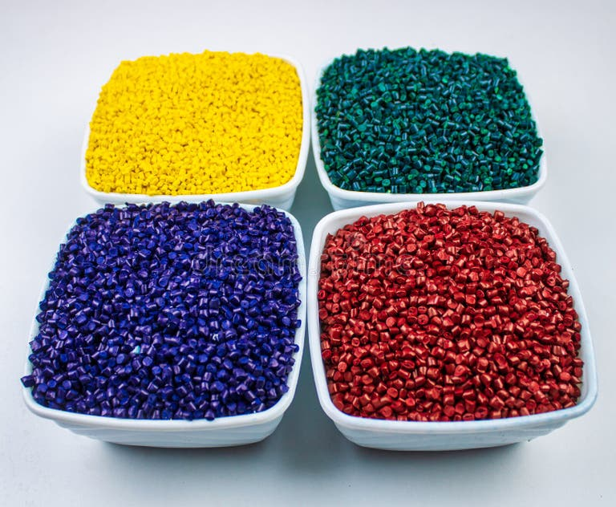
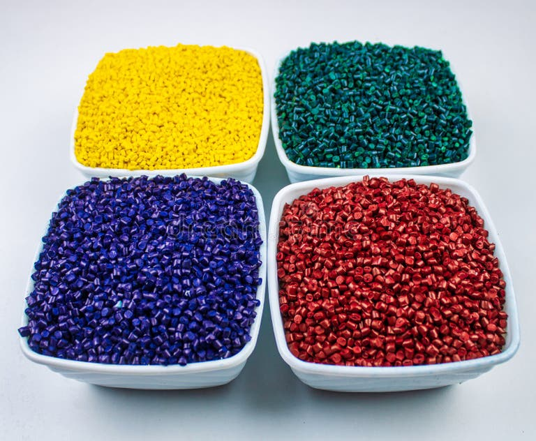

Product Details
PP (Polypropylene) granules are lightweight, flexible plastic pellets used in automotive parts, textiles, packaging, and household items. They offer excellent heat resistance, chemical stability, and are easy to mold.
- Density: 0.90-0.92 g/cm³
- Melting Point: 160-170°C
- Applications: Automotive components, ropes, containers, medical devices
- Benefits: Lightweight, fatigue-resistant, recyclable
 
